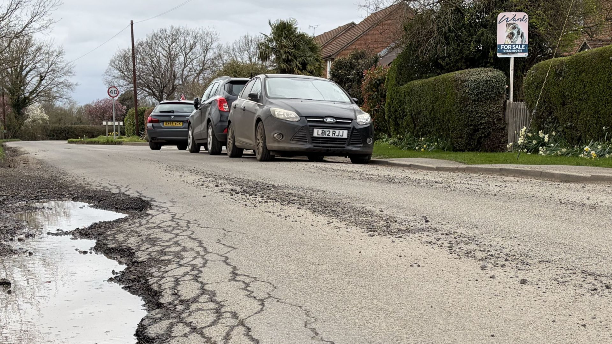

Report Issue
Submit concerns with details, photos, and locations directly to the right team.
A modern civic engagement platform that helps citizens report issues, track progress, and collaborate with verified officials to create transparent, responsive communities.

Report issues, collaborate with officials, and track progress in one transparent flow.
Submit concerns with details, photos, and locations directly to the right team.
Officials review requests, assign teams, and share updates with clear timelines.
Monitor status changes, receive notifications, and close the loop on results.